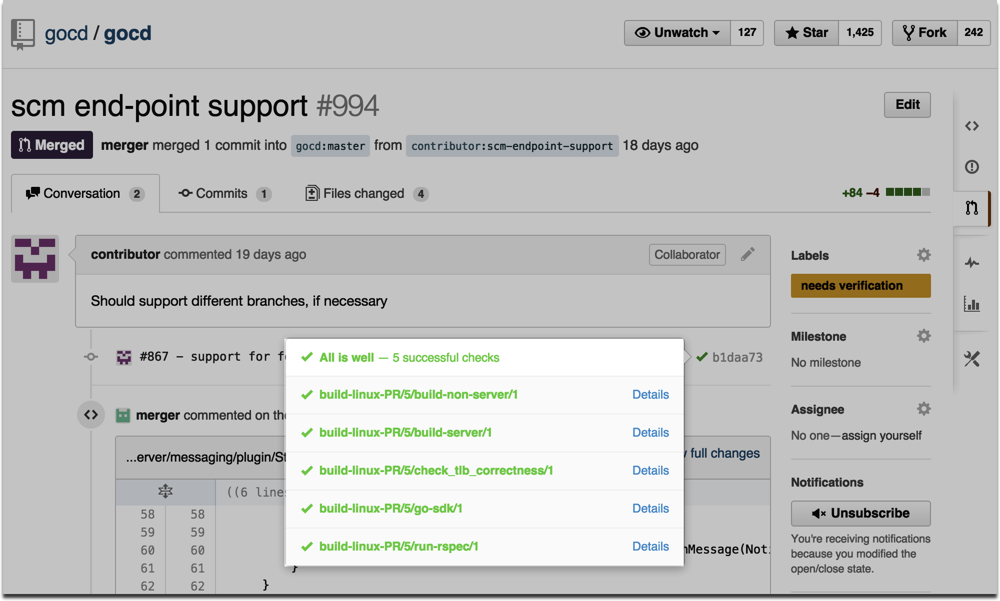
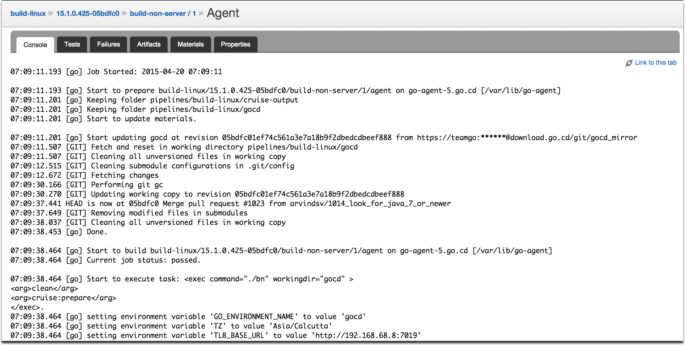

Check out "Enhancements" and "Bug fixes" for specific versions of Go below. As always, feel free to tell us what you think, or file a bug on GitHub.
We try our best to credit all contributors. Apologies if we miss you out. Let us know and we will change this.Thanks to everyone for contributing patches, feature requests, reporting issues and participating in various discussions.
16.6.0 (latest)
16.5.0
16.4.0
16.3.0
16.2.1
16.2.0
16.1.0
15.3.1
15.3.0
15.2.0
15.1.0
14.4.0
14.3.0
14.2.0
14.1.0
16.6.0 (latest)
Whitelist support for SCM materials
#2314 - Handling the triggering of a pipeline for monolithic repositories using a whitelist.
For example, in a repository 'baz' with folders/projects 'foo/bar' and 'foo/qux' one
can trigger the pipeline only on changes to 'foo/bar' by configuring it as a whitelisted folder.
API Enhancements
#2240 - Added a URL endpoint to grab a snapshot of the GoCD config git repository.
For example, backup the config repo 'config-repository' using:
#2283 - Changed the existing API /api/support to return information in JSON format for easier parsing.
This end point also returns more information to identify performance bottlenecks.
#2239 - Added a version API to get the version of Go server.
Performance Improvements
#2248 - Improved page load performance across the board.
Upcoming Feature - Config in a repository
This release also adds foundation for reading pipeline configuration from the material's repository.
This feature is still in development and more details can be found
here.
Note
A more comprehensive list of changes for this release can be found here.
We've graduated from being Java 8 compatible to officially supporting it!
You can see our journey to this milestone
here.
GoCD will continue to support Java 7 till release 17.1 scheduled for January 2017. Post that, we will exclusively support Java 8. We recommend that you plan for and upgrade to Java 8 (for both GoCD server and agents) before the 17.1 release.
Performance
#2145 - Handle large modifications made to SCM materials without memory issues on the agent.
Materials
Fixes around handling git rebase
#2110 - Fix automatic build loop after a git rebase.
Important: There are several security fixes to prevent XSS, CSRF and remote execution exploits. We highly recommend this upgrade to keep your GoCD server and agent secure.
Performance
#2106 - Handle eviction/expiry of composite-keys from GoCache
Note
A more comprehensive list of changes for this release can be found here.
Contributors
Special thanks again to drrb for reporting and verifying all of the security vulnerabilities in this release.
Important: This release fixes several XSS and CSRF vulnerabilities which can be exploited in earlier versions. As the changes are extensive, patches for older releases will not be provided. We recommend all users to upgrade to this version to safeguard your GoCD server.
These security vulnerabilities were responsibly disclosed by drrb. We want to give users some time to upgrade, before providing more details about the vulnerabilities. We will work with drrb on the specifics of providing these details, soon.
The old java API-based plugin extensions for tasks and package repositories has been deprecated. Developers are encouraged to use the new JSON message-based APIs to author plugins.
These APIs will be removed in the September release of GoCD.
In light of downward trend in Solaris installers, we are now considering a timeline to stop providing Solaris installers for GoCD. Users can continue to use the generic zip files to run GoCD on Solaris. However the support for Solaris will be on a best-effort basis.
We will stop providing Solaris installers from the July release of GoCD.
Note
A more comprehensive list of changes for this release can be found here.
Contributors
Special thanks to drrb for reporting and verifying all of the security vulnerabilities in this release.
We are moving to a more regular release schedule, and so you might see releases with mostly issues fixed, while bigger level features are in progress across releases.
Important features and bug fixes in this release -
The comprehensive list of changes for this release can be found here.
Thanks!
Tomasz Setkowski, Sean Escriva for making this release of GoCD better!
15.3.1
What's new in GoCD 15.3.1
Important: 15.3.1 has been removed from the downloads page because it had an issue which could have caused problems during configuration save. The issue
mentioned is fixed in 16.1.0. The rest of the issues mentioned below are a part of 16.1.0 as well. We highly recommend upgrading to 16.1.0.
The comprehensive list of changes for this release can be found here.
15.3.0
New API for editing pipelines
A convenience JSON HAL compliant API for modifying pipelines. Check
api.go.cd for usage details.
Get informed about updates
A new version of Go CD is released every few months, with this feature you’ll now be notified about the latest supported release (if you are running an older version).
The comprehensive list of changes for this release can be found
here.
Thanks!
Tomasz Setkowski, Steve Hill, Alex Schwartz, Pooja R, Srinivas Upadhya, Xiao Li, Sandy Gordon, Arun Kumar, Björn Andersson, Federica Luraschi, Graham Christensen, Parker Shelton, Justin, Max Griffiths, Ashok Gowtham M, Massood, Ben Overmyer,James M. Greene, Ashwanth Kumar, Jakub Narloch, Alex Voitau, Joakim Wånggren, Paul Clarkin, X O and markuswehrle for making Go better.
15.2.0
Improvements to the console log
GoCD now supports rendering of ANSI color codes to show you much more beautiful console logs. Additionally, Go will automatically follow the logs as your build produces it, very much like your favorite terminal program.
Authentication end-point
With the newly exposed authentication end-point, Go users can now add custom authentication schemes through plugins. Read the blog
post for details.
Setup hostname when auto-registering agents
You can now specify a property agent.auto.register.hostname to setup the hostname when
auto-registering an agent.
API Improvements
Go's APIs are fairly old, have inconsistent and unpredictable content types (csv, xml, json, plain text).
Going forward, we would like to announce an ongoing effort to improve and migrate existing APIs to use something that is more modern, easy to discover, learn and build API clients for.
This new plugin endpoint introduced in 15.1 allows Go’s already long list of source code materials to be extended without making changes to the core!
Support for this endpoint brought along support for GitHub pull requests, contributed by an external contributor @ashwanthkumar (so exciting!), with support from a Go core contributor, @srinivasupadhya.
You’ll never need to wish that Go supported your favorite kind of material repository, you can implement support for it yourself!
Here’s how the GitHub pull requests plugin looks in action (below). Read more about it in this blog post. Watch out for more improvements in the UI around this area.

New plugin endpoint for "Notifications"
Continuing on the path of opening up different parts of Go for extension, Go 15.1 introduces a new plugin endpoint for notifications. At this point, Go notifies the plugin of changes in the status of every stage, as it happens! This allows
for quite a lot of use cases, and we are excited to see plugins written against this endpoint even before release (yay, open source!).
@matt-richardson has written a really nice generic notification plugin, which sends build notifications to any websocket listener! @ashwanthkumar has written a great plugin to notify Slack about build status changes. @srinivasupadhya has written a couple of nice notification plugins to update pull request statuses in GitHub and Atlassian
Stash.
This contribution by @alexschwartz helps declutter the Go Dashboard, by allowing the pipeline label to be trimmed, per material. This feature is really useful when dealing with unwieldy 40 character
SHAs in pipelines with git/mercurial materials in them. This feature allows this:
Starting from Go 15.1, Go’s console logs will have timestamps for every line. This is very useful for finding out long-running parts of tasks. Here’s how it looks:

More ...
This release is filled with many other notable features, changes and fixes, such as:
#848 - Support for Mercurial versions 2.0 and greater.
#781 - Post-commit hook for Mercurial (contribution by Go team alumnus, @sachinsudheendra).
#768 - A beta feature to upload plugins directly from within the Go plugins tab (contribution by @pwen and @pamo).
#700 - Run multiple agents as services - for Linux (contribution by @bernardn).
#400 - Large part of a long-pending upgrade from Jetty 6 to Jetty 9 (turned off, by default in 15.1 - Waiting for some performance fixes on Jetty’s side).
#104 - Agents do not restart because of a server restart, any more (plugin sync issue fixed).
#725 - Pipeline instance information through APIs.
#941 - Small improvement around config save -Look for a lot more around this area soon!
#877 - Performance improvements around CCTray and APIs.
44 - Revise how new pipelines appear under 'Personalize'. Thanks @mmb for the contribution. (docs)
699 - Users can comment on pipeline run history. (docs) Note: This feature needs some improvements
listed here. Therefore the feature is turned 'off' for this release. To turn 'on' the feature, see details.
Thanks @mmb, @gajwani,@fkotsian & @bsnchancontribution.
Bug Fixes
716 - Multiline commit comments don't trigger notifications. Thanks @mythgarr for the contribution.
360 - Unable to 'clean working directory' when recursive symlinks are present. Also, improved logging for error scenario. Thanks @mmb & @gajwani for the contribution.
770 - 'Check connection' for package materials fails in 'new pipeline creation' wizard when there are many other task plugins registered.
Others
688 - Change command error stream prefix to STDERR. Thanks @mmb for the contribution.
769 - Remove unnecessary logging from test environment. Thanks @hammerdr for the contribution.
14.3.0
New Features
396 - Automate running 'X' instances of a particular job and achieve faster results by parallelization. (docs)